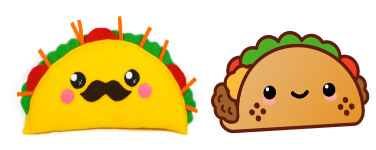

Tacos are a traditional Mexican food. There are like a burrito, but it is not fully wrapped, only on two opposite sides. They are filled with 3 to 4 toppings that you can choose. The most common choices are meat, cheese, beans, lettuce, salsa, and corn, but you can have any toppings you want! There are millions of tacos, and because there are so many, we should listen to Parry Gripp, who once said, "It's Raining Tacos..."
Go Listen to the song
"Raining Tacos"
by Parry Gripp!
Cute Tacos!